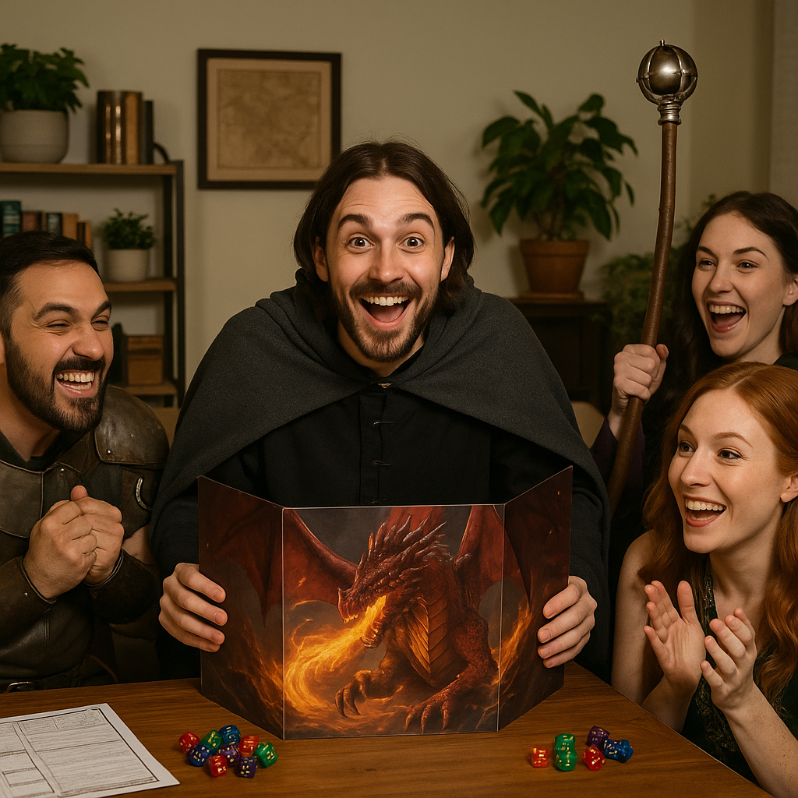

Becoming an amazing D&D Dungeon Master starts with cultivating a mindset of flexibility and curiosity. While it helps to prepare a strong foundation—maps, NPCs, story hooks, and rules knowledge—what makes a DM stand out is their ability to adapt in the moment. Players will always surprise you, and the mark of a great DM is to say “yes, and…” instead of shutting down creativity. Build your world with enough detail to inspire immersion, but leave open spaces for the players to shape it with their choices. Study the rules so you understand the framework, but don’t let them suffocate the fun; use them as tools, not shackles. The story is always about the table.
Equally important is mastering the art of presentation and atmosphere. Your descriptions should spark imagination, whether it’s the creak of an ancient door, the stench of a dungeon corridor, or the glimmer of a dragon’s hoard. Use pacing to your advantage—let combat feel sharp and tense, while roleplay breathes slow and rich. Practice distinct NPC voices or quirks to make characters memorable, but don’t worry about perfection; authenticity is more powerful than performance. Most importantly, foster trust at the table. Respect your players’ boundaries, celebrate their victories, and ensure everyone has space to shine. An amazing DM is not just a storyteller or rules arbiter—they are the conductor of shared imagination, turning a group of friends into heroes on a legendary journey.